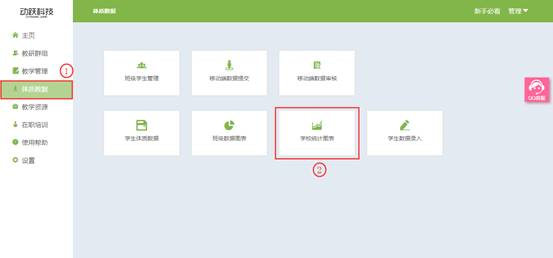

学校统计图表
视频教程：
展示班级、年级或全校的项目成绩分层对比，分为优秀、良好、及格、不及格四个层级，教师可直接对比各班级、各年级的人数成绩优良情况。
1. 登录动跃体育教学管理平台后，进入平台操作界面
2. 点击进入体质数据 > 点击学校统计报表按钮，如下图:

3. 学校统计报表详情
>选择范围：分为全校及年级，全校直接选择项目，年级需选择要查看的具体年级。
>选择项目：项目为学生在校考察的各项指标名称，总成绩为综合项目计算的成绩。
>对比种类：展示分为列表及图表两个方式，性别切换可满足男女一起对比和男女分开对比。

4. 全校展示：点击【全校】，点击选择需要查看的项目，选择完成后，在下方展示全校学生在该项成绩或总成绩的及格情况展示，分4个层级展示人数比例，以及优良率、合格率的百分比。
>列表展示：以列表的方式展示数据详情，展示具体人数数据。
>图表展示：图标直观的展示了各个层级的人数比例，不展示具体人数。
5. 年级展示，点击【年级】，点击选择需要查看的年级及项目，选择完成后，在下方展示全校学生在该项成绩或总成绩的及格情况展示，分4个层级展示人数比例，以及优良率、合格率的百分比。
>列表展示：以列表的方式展示数据详情，展示具体人数数据。
>图表展示：图标直观的展示了各个层级的人数比例，不展示具体人数。
6.页面右上角的<数据导出>按钮，教师可以导出本地，更加方便的对比学生的信息，可用于展示、讲解与分析学生体质数据。
>分项分析数据导出：单项数据分开，一项一项的分开展示。
>总成绩分析数据导出：所有数据的对比。